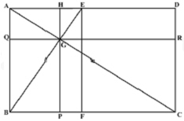
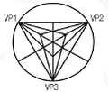
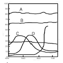
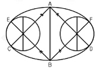

컴퓨터그래픽스운용기능사 (2005-10-02 기출문제)
1과목: 산업디자인 일반
1. 난필의 의미로 아이디어 발상 과정의 초기단계에서 사용하며, 프리핸드 선에 의한 약화 형식의 스케치는?
- 러프스케치
- 스타일스케치
- 퍼스펙티브스케치
- 스크래치스케치
(정답률: 82%)

2. 디자인 문제 해결의 과정을 올바르게 나열한 것은?
- 계획 → 조사 → 분석 → 평가 → 종합
- 조사 → 계획 → 분석 → 종합 → 평가
- 계획 → 조사 → 분석 → 종합 → 평가
- 조사 → 계획 → 분석 → 평가 → 종합
(정답률: 74%)
3. 다음 중 인테리어 실내공간의 기본적인 요소가 아닌 것은?
- 바닥
- 가구
- 벽
- 천장
(정답률: 92%)
4. 자본주의와 과시적 소비가 지나치게 밀착하는 현상에 대한 저항으로, 좀 더 환경적이고 인간적인 디자인 철학을 제시한 조형운동은?
- 아르누보
- 독일공작연맹
- 미술 공예 운동
- 반디자인 운동
(정답률: 59%)
5. 다음 중 미래파에 대한 설명으로 바른 것은?
- 1990년대 프랑스 파리를 중심으로 일어난 급진적인 조형운동이다.
- 주요 인물로는 마네, 모네, 드가 등이 있다.
- 전통적인 조형 미술과 아카데미의 예술, 사변적인 철학을 추구하였다.
- 기계, 자동차, 비행기 등 속도감과 반복성 등의 물질 문명을 찬양하였다.
(정답률: 71%)
6. 실내 디자인 설계 제도를 위한 기본 사항을 설명한 것 중 잘못 표현된 것은?
- 설계도면 제작시 기본적 제도 기술이 습득되어야 하며 설계의 목적과 디자인의도에 적합한 창의적인 설계가 무엇보다 중요하다.
- 실내 디자인의 설계 도면은 축척에 따라 표현되는 정도가 다르며 도면의 표시 기호는 건축 설계 도면의 기호 표시와 다르기 때문에 주의해야 한다.
- 설계도에 있어 문자는 매우 중요하며 연필로 쓰거나 문자 세트, 또는 문자판 템플릿을 사용할 수도 있다.
- 제도용 기구는 디자인 표현에 많은 영향을 끼치므로 신중하게 선택해야 하며, 사용방법을 익히기 위해서는 무엇보다도 경험자의 조언과 철저한 자기 훈련을 필요로 한다.
(정답률: 60%)
7. 서로 다른 부분의 조합에 의하여 생기는, 시각상 힘의 강약에 의한 형의 감정효과인 것은?
- 통일
- 리듬
- 반복
- 대비
(정답률: 68%)
8. 기업의 이미지(시각적 특징) 통합을 광고매체를 이용하여 불특정 다수의 사람들에게 표현하는 것은?
- CF
- BI
- CI
- DM
(정답률: 82%)
9. 기업에서 일반 가정용 냉장고 개발을 위한 소비자행동조사를 하려고 할 때, 가장 적절한 타켓 층은?
- 판매원
- 직장여성
- 주부
- 가장
(정답률: 95%)
10. 빛 전부를 천정이나 벽면에 투사하여, 그 반사광으로 조명하는 방법으로 은은한 빛이 골고루 비치거나 조도가 약해서 침실이나 병실에 적당한 조명은?
- 간접조명
- 국부조명
- 전반조명
- 직접조명
(정답률: 89%)
11. 포장 디자인을 할 때 갖추어야 할 점이 아닌 것은?
- 쌓기 쉽게 디자인 되어야 한다.
- 매혹적으로 보이도록 디자인 되어야 한다.
- 상표명과 내용물, 무게는 표시하지 않아도 된다.
- 고객의 눈에 잘 띄어야 하며, 여러 조건하에서도 필요한 정보를 잘 전달하게 해야 한다.
(정답률: 80%)
12. 다음 중에서 반드시 수학적 법칙과 함께 생기며, 가장 뚜렷한 질서를 가지는 형태는?
- 자연적 형태
- 비구상적 형태
- 공간적 형태
- 기하학적 형태
(정답률: 82%)
13. 흑백의 상렬한 조화와 이국적인 양식, 쾌락적, 생체체적, 여성적, 유기적 곡선, 비대칭 구성이 특징이며 윌리엄 브레들리, 오브리 비어즐리, 가우디 등이 대표작가인 양식은?
- 옵아트
- 구성주의
- 아르누보
- 아르데코
(정답률: 60%)
14. 다음 중 디자인을 최종 결정하여 관계자들에게 제시용으로 제작되는 제시모형(presentation model)의 재질로 적합하지 않은 것은?
- 목재 모형
- 모래 모형
- 석고 모형
- 금속 모형
(정답률: 88%)
15. 입체를 적극적 입체와 소극적 입체로 분류하는데 있어 적극적 입체에 해당하는 것은?
- 순수형
- 이념적 형
- 크기, 폭이 없는 형
- 현실적 형
(정답률: 64%)
16. 다음 광고의 분류 중 올바른 것은?
- 기능적 분류 : 상품광고, 기업광고
- 소구 대상별 분류 : 소비자광고, 업자광고, 전문광고
- 소구 내용별 분류 : 감성광고, 이성광고
- 소구 타입별 분류 : 직접행동광고, 간접행동광고
(정답률: 55%)
17. 잡지광고 포맷의 요소와 열독률과의 관계를 설명한 것으로 올바른 것은?
- 왼쪽 페이지 광고가 오른쪽 것 보다 열독률이 높다.
- 상품의 종류에 따라 열독률에 차이가 있고, 남녀에 따라서도 차이가 난다.
- 한 호에 실린 광고수가 많을수록 열독률은 높아진다.
- 그간의 광고비용이 현재광고의 열독률에 큰 영향을 미친다.
(정답률: 82%)
18. 몸에 지니는 작은 액세서리에서부터, 입고, 화장하고, 가꾸는 일체의 행위 자체를 의도된 디자인으로 계획하는 것을 무엇이라고 하는가?
- 의상디자인
- 장식디자인
- 토털패션디자인
- 제품디자인
(정답률: 85%)
19. 디자인 리서치(design research)란?
- 디자인 제조원가
- 디자인의 조사연구
- 디자인 특허권
- 디자인 평가
(정답률: 84%)
20. 다음 중 디자인의 궁극적인 목적은?
- 인간의 행복을 위한 물질적 생활환경의 개선 및 창조
- 경제적 이윤을 추구하기 위한 디자이너의 욕망
- 예술적인 창작 작품 제작을 위한 수단
- 인간의 장식적 욕구를 충족시키기 위한 수단
(정답률: 86%)
2과목: 색채 및 도법
21. 점차 어두워지면 가장 먼저 보이지 않는 색과 반대로 밝게 보이기 시작하는 색의 순으로 옳게 짝지어진 것은?
- 노랑 - 빨강
- 빨강 - 파랑
- 흰색 - 검정
- 파랑 - 노랑
(정답률: 76%)
22. 다음 그림은 황금분할된 그림이다. 황금비가 아닌 것으로 연결된 변은?

- AB : BC
- GP : PC
- AQ : QG
- QB : BC
(정답률: 73%)
23. 큰 도면을 접을 때의 원칙적인 크기는?
- A1
- A2
- A3
- A4
(정답률: 69%)
24. 색의 주목성에 대한 설명 중 틀린 것은?
- 고명도, 고채도의 색은 주목성이 높다.
- 일반적으로 명시도가 높으면 주목성도 높다.
- 녹색은 빨강보다 주목성이 높다.
- 포스터, 광고 등에는 주목성이 높은 배색을 한다.
(정답률: 90%)
25. 선의 종류 중 물체의 보이지 않는 부분을 표시하는 선은?
- 실선
- 파선
- 일점쇄선
- 이점쇄선
(정답률: 75%)
26. 다음 그림과 같은 투시도는?

- 45° 투시도
- 30° 투시도
- 평행투시도
- 유각투시도
(정답률: 59%)
27. 우리나라 산업규격(KS)에서 제정되어 교육용으로 채택되어 사용되고 잇는 표색계는?
- 오스트발트 표색계
- 먼셀 표색계
- NCS 표색계
- P.C.C.S 표색계
(정답률: 86%)
28. 빨강(R)과 녹색(G)의 색광을 서로 비슷한 밝기로 혼합하면 어떤 색광이 되는가?
- 노랑(Y, yellow)
- 청록(C, cyan)
- 자주(M, magenta)
- 파랑(B, blue)
(정답률: 73%)
29. 평행 투시도의 소점은?
- 1개
- 2개
- 3개
- 4개
(정답률: 73%)
30. 자극이 사라진 후 원자극의 정반대의 상의 보이는 잔상 효과는?
- 부의 잔상
- 정의 잔상
- 정지 잔상
- 변화 잔상
(정답률: 79%)
31. 다음 그림은 스펙트럼의 반사율 곡선과 색의 특징을 나타낸 것이다. 밝은 회색에 해당되는 것은?

- A
- B
- C
- D
(정답률: 58%)
32. 병치혼합의 예가 아닌 것은?
- 신인상파 화가의 점묘화
- 2가지 색 이상으로 짜여진 직물
- 컬러 TV의 영상화면
- 아파트 벽면의 그림과 배경색
(정답률: 75%)
33. 다음 색채조절 중 가장 적절하지 않은 것은?
- 경주용 자동차는 파란색 계열의 색상이 유리하다.
- 패스트푸드점은 빨간색 계열의 색상이 유리하다.
- 역이나 병원 등의 대합실은 파랑색 계열이 유리하다.
- 운동선수의 복장은 빨간색 계열의 색상이 유리하다.
(정답률: 67%)
34. 다면체 중 꼭지점에서 이루는 입체각이 똑같고 옆면이 합동이 되는 다각형으로 이루어지는 입체를 정다면체라 한다. 다음 중 정다면체가 아닌 것은?
- 4면체
- 8면체
- 16면체
- 20면체
(정답률: 53%)
35. 투상도법에서 화면과 지면이 만나는 것은?
- 기선
- 중심선
- 수평선
- 수직선
(정답률: 60%)
36. 색의 항상성(恒常性)에 관한 설명 중 올바른 것은?
- 가시도내에서 조명에 따라 같은 색이 달라져 보인다.
- 조명의 자극이 변해도 어떤 물체의 색이 변해 보이지 않는다.
- 조명이 변하는 즉시 물체의 색도 달라 보인다.
- 색을 인식할 때는 자극과 감각, 시각과는 관계가 없다.
(정답률: 76%)
37. 다음 도형은 무엇을 구하기 위한 과정인가?

- 두 원을 격리시킨 타원 그리기
- 두 원을 연접시킨 타원 그리기
- 장축과 단축이 주어진 타원 그리기
- 4중심법에 의한 타원 그리기
(정답률: 68%)
38. 동양의 전통적 색채는 음.양의 역학적 원리에 근거를 두고 있다. 다음 색 중 음의 색은?
- 빨강
- 노랑
- 파랑
- 주황
(정답률: 83%)
39. 다음 중 색의 온도감이 중성색인 것은?
- 노랑
- 자주
- 빨강
- 파랑
(정답률: 87%)
40. 붉은 색채의 실내에서 시간이 길게 느껴지는 등 색의 속도감을 강조한 사람은?
- 비렌
- 문.스펜서
- 먼셀
- 져드
(정답률: 64%)
3과목: 디자인 재료
41. 다음 중 무기재료로 짝지어진 것은?
- 도자기, 플라스틱
- 유리, 피혁
- 금속, 유리
- 목재, 종이
(정답률: 74%)
42. 디자인 제도시 선분을 옮기거나 자에서 치수를 옮길 때 주로 사용되는 도구는?
- 디바이더
- 비임 컴퍼스
- 스프링 컴퍼스
- 대형 컴퍼스
(정답률: 89%)
43. 박엽지 중 화학 펄프를 점상으로 두드려 분해해서 만든 것으로 표면이 매끈한 종이는?
- 글라싱지
- 크라프트지
- 박리지
- 콘덴서지
(정답률: 68%)
44. 화학적, 기계적 가공에 의하여 종이의 질을 변화시켜 사용 목적에 알맞게 만드는 가공 방법은?
- 도피 가공
- 흡수 가공
- 변성 가공
- 배접 가공
(정답률: 68%)
45. 얇은 철판에 두께의 변화를 주지 않고 표면과 이면에 오목한 부분과 볼록한 부분이 반복되도록 금형을 사용하여 성형하는 기법은?
- 압인가공
- 소성가공
- 엠보싱가공
- 압출가공
(정답률: 79%)
46. 주성분이 우루시올이며 용제가 적게 들고 광택이 우아하여 공예품에 주로 사용되는 천연 수지 도료는?
- 래커
- 옻
- 에폭시 수지 도료
- 에멀션 도료
(정답률: 73%)
47. 유리의 성질에 관한 설명 중 옳은 것은?
- 보통 유리의 비중은 2.5~2.6 정도이다.
- 보통 유리의 휨강도는 두꺼울수록 커진다.
- 전기의 양도체이다.
- 내산성이 우수하다.
(정답률: 49%)
48. 인화지에 인화하여 사진을 완성하기 위한 중간 목적으로 사용하는 필름은?
- 네거티브필름
- 포지티브필름
- 슬라이드필름
- 리버셜필름
(정답률: 62%)
4과목: 컴퓨터 그래픽스
49. 컴퓨터 모니터상의 컬러와 인소, 출력물의 컬러 차이가 생기는 원인이 아닌 것은?
- 모니터의 색상을 구성하는 컬러와 인쇄잉크의 컬러구성이 다르기 때문에
- 모니터의 색상표현영역(Color Gamut)과 인쇄잉크의 표현영역이 다르기 때문에
- 모니터와 프린터의 캘리브레이션(Calibration)이 부정확하기 때문에
- 모니터의 이미지 전송속도와 프린터의 처리속도가 다르기 때문에
(정답률: 76%)
50. 인터넷 상에서 이미지가 처음에는 대략적인 모양만을 나타내는 거친 프리뷰를 나타내고, 그 다음에 단계적으로 자세하게 나타나도록 하기 위해 이미지를 저장할 때, 선택하는 옵션은?
- 인터레이스 방식
- 안티 엘리어싱 방식
- 블러 방식
- 다운샘플링 방식
(정답률: 60%)
51. 네가지 노즐을 통해 잉크를 뿌려서 문자나 어떤 이미지를 나타내는 프린트 방식은?
- 레이저 프린터(Laser printer)방식
- 잉크젯 프린터(Inkjet printer)방식
- 도트 매트릭스(Dot Matrix)방식
- 펜 플로터(Pen plotter)방식
(정답률: 90%)
52. 포토샵 프로그램의 효율적 작업을 위한 작업속도 향상방법 중 틀린 것은?
- 레이어(Layer)와 채널을 가능한 적게 사용하는 방식을 취한다.
- 램 디스크를 만들어 스크래치 디스크로 활용하며, 내장 디스크를 대신 외장 광디스크에 프로그램을 넣어 처리 속도를 향상시킨다.
- 메뉴 명령대신 가급적 동등키(단축키)를 사용하여 곧바로 실행 될 수 있도록 작업하여 효율을 높인다.
- 최초 작업은 저해상도 파일로 미리 해봄으로서 실제 출력 크기의 이미지 해상도 작업시 제작상의 착오를 최소화한다.
(정답률: 54%)
53. 반사율과 굴절률을 계산하여 투영감과 그림자까지 완벽하게 표현하는 렌더링 기법은?
- 레이트레이싱 방식
- 세이딩 방식
- 텍스쳐 매핑 방식
- 리코딩 방식
(정답률: 52%)
54. 컴퓨터그래픽에서 픽셀이 모여 곡선이나 사선을 나타내며 계단 모양같이 테두리가 나타나는데 이 계단 모양의 거친 것을 없애기 위해 바탕과 물체간의 블렌드를 주는 효과를 무엇이라고 하는가?
- 비트맵 이미지
- 윈도우
- 안티 엘리어싱
- 디더링
(정답률: 89%)
55. 다음 컴퓨터연산의 기본단위의 크기가 바르게 설정된 것은?
- Byte < Bit < Kilobyte < Megabyte
- Kilobyte < Terabyte < Megabyte < Gigabyte
- Bit < Byte < Kilobyte < Megabyte
- Kilobyte < Megabyte < Terabyte < Gigabyte
(정답률: 86%)
56. CPU(Central Processing Unit)의 대표적인 기능이 아닌 것은?
- 기억기능
- 제어기능
- 출력기능
- 연산기능
(정답률: 78%)
57. 2차원의 이미지나 3차원의 이미지를 다른 형상으로 변화시키는 작업을 지칭하는 것으로, 한 사람의 얼굴을 다른 사람의 얼굴이나 동물의 얼굴 등으로 자연스럽게 바꿀 때 사용하는 기법은?
- 렌더링(Rendering)
- GUI(Graphic User Interface)
- 몰핑(Morphing)
- 고라우드 쉐이딩(Gouraud Shading)
(정답률: 69%)
58. 다음 중 그래픽 데이터의 압축을 지원하지 않는 파일형식은?
- TIFF
- JPEG
- EPS
- GIF
(정답률: 55%)
59. 다음 컴퓨터 소자의 구별 중 제 2세대에 해당하는 것은?
- 진공관
- IC
- 트랜지스터
- VLSI
(정답률: 84%)
60. 벡터방식의 이미지를 비트맵 방식의 이미지로 전환시키는 과정을 나타내는 용어는?
- 드로잉(Drawing)
- 페인팅(Paintind)
- 래스터라이징(Rasterising)
- 이미지 프로세싱(Image Processing)
(정답률: 73%)